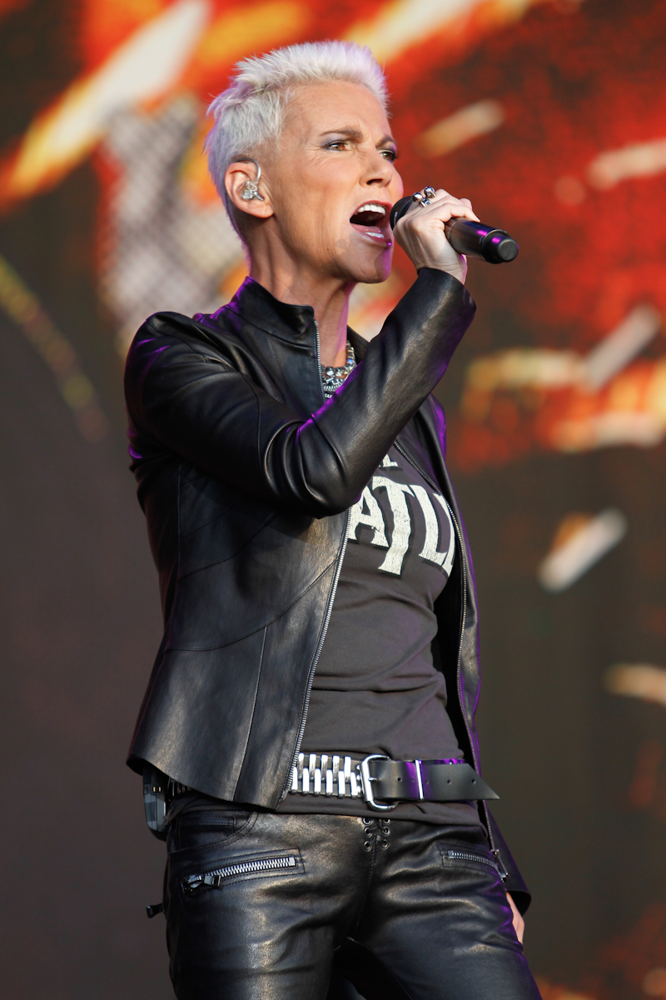
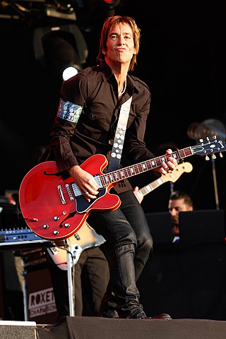

SOBRE O ARTISTA:
Roxette foi uma dupla de pop rock sueca formada por Marie Fredriksson e Per Gessle. A dupla alcançou sucesso mundial entre o fim dos anos 1980 até meados da década de 1990, período em que tiveram dezenove singles no top 40 do UK Singles Chart e quatro singles #1 nos Estados Unidos: "The Look", "Listen to Your Heart", "It Must Have Been Love" e "Joyride". Além disso a dupla foi certificada pela Recording Industry Association of America (RIAA), com dois álbuns de platina — Look Sharp!, de 1988 (lançado nos Estados Unidos em 1989) e Joyride, de 1991, bem como dois singles de ouro — "The Look" e "It Must Have Been Love". Ao longo de mais de trinta anos de carreira, o Roxette vendeu mais de 75 milhões de álbuns no mundo todo. O nome Roxette foi escolhido a partir de uma canção homônima de 1974 da banda britânica Dr. Feelgood, uma das favoritas de Per Gessle.
 